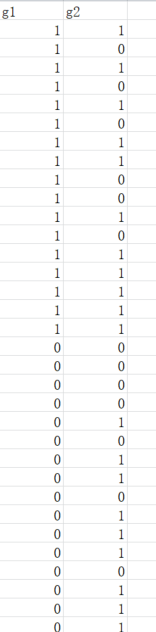
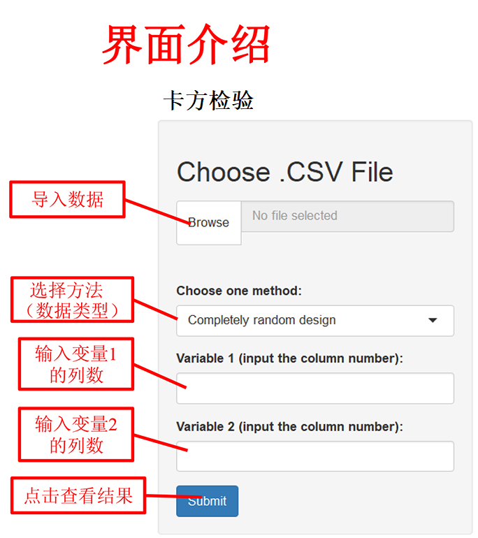

<canvas></canvas><!doctype html>
<html>
<head>
<meta charset="utf-8">
<title>卡方检验</title>
<style type="text/css">
body {
	background-image: url(image/image16.png);
	background-size: 100% 100%;
	font-size: 18px;
}
body,td,th {
	color: #000;
	font-size: 24px;
	font-family: Cambria, "Hoefler Text", "Liberation Serif", Times, "Times New Roman", serif;
}
</style>
</head>

<body>
<table width="1419" border="0" align="center" cellpadding="0" cellspacing="0">
  <tr>
    <td width="684" style="font-size: 50; color: #C06; font-family: Cambria, 'Hoefler Text', 'Liberation Serif', Times, 'Times New Roman', serif;">卡方检验</td>
    <td width="42" style="font-size: 32px">&nbsp;</td>
    <td colspan="2" style="font-size: 32px; color: #C09; font-family: Cambria, 'Hoefler Text', 'Liberation Serif', Times, 'Times New Roman', serif;">一、数据格式</td>
  </tr>
  <tr>
    <td align="center" valign="middle"><article style="font-size: 36px; font-family: Cambria, 'Hoefler Text', 'Liberation Serif', Times, 'Times New Roman', serif;">
      <p><a href="https://lu-13579.shinyapps.io/Chisquare/" target="_blank"><strong>点击此处进入分析界面</strong></a>    </p>
    </article></td>
    <td height="186" align="left" valign="top"> &nbsp;&nbsp;&nbsp;&nbsp;&nbsp;&nbsp;&nbsp;&nbsp;&nbsp;&nbsp;&nbsp;&nbsp;&nbsp;&nbsp;&nbsp;</td>
    <td width="645" rowspan="2" align="left" valign="top"> &nbsp;&nbsp;&nbsp;&nbsp;&nbsp;&nbsp;&nbsp;&nbsp;&nbsp;</td>
    <td width="298" rowspan="2" align="left" valign="top">&nbsp;</td>
  </tr>
  <tr>
    <td rowspan="7" align="center" valign="top"></td>
    <td rowspan="4" align="left" valign="top">&nbsp;</td>
  </tr>
  <tr>
    <td colspan="2" style="font-size: 32px; font-family: Cambria, 'Hoefler Text', 'Liberation Serif', Times, 'Times New Roman', serif;"><strong> &nbsp;&nbsp;&nbsp;注： </strong>
      <article style="font-size: 24px; font-family: Cambria, 'Hoefler Text', 'Liberation Serif', Times, 'Times New Roman', serif;">&nbsp;&nbsp;&nbsp;&nbsp;&nbsp;&nbsp;&nbsp;&nbsp;1、数据格式为“.csv”<br>
        &nbsp;  &nbsp;&nbsp;&nbsp;&nbsp;&nbsp;&nbsp;2、数据变量名必须为英文 <br>
      </article></td>
  </tr>
  <tr>
    <td height="64" colspan="2" valign="bottom" style="font-size: 32px; color: #C09; font-family: Cambria, 'Hoefler Text', 'Liberation Serif', Times, 'Times New Roman', serif;">二、卡方检验方法</td>
  </tr>
  <tr>
    <td colspan="2" rowspan="2" align="left" valign="top"> <p><strong>1.<span style="font-family: Cambria, 'Hoefler Text', 'Liberation Serif', Times, 'Times New Roman', serif"> </span></strong><strong> 完全随机设计的卡方检验<br>
      2.&nbsp;配对设计的卡方检验</strong></p>
    <article style=" font-size: 20px;"></article></td>
  </tr>
  <tr>
    <td height="28" valign="top">&nbsp;</td>
  </tr>
  <tr>
    <td height="65" style="font-size: 32px">&nbsp;</td>
    <td colspan="2" valign="bottom" style="font-size: 32px; color: #C09;">三、输出结果展示</td>
  </tr>
  <tr>
    <td>&nbsp;</td>
    <td colspan="2">&nbsp;&nbsp;&nbsp;&nbsp;&nbsp;&nbsp;&nbsp;输出结果包括卡方检验，校正卡方检验结果等。<br>
      &nbsp;&nbsp;&nbsp;&nbsp;&nbsp;&nbsp;&nbsp;&nbsp;&nbsp;&nbsp;示例如下： <br>      
    &nbsp;&nbsp;&nbsp;&nbsp;&nbsp;&nbsp;&nbsp;</td>
  </tr>
</table>
</body>
</html>
